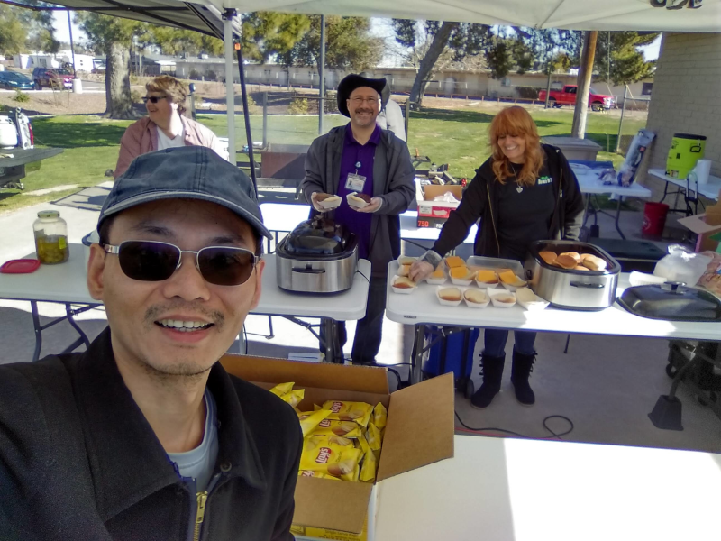
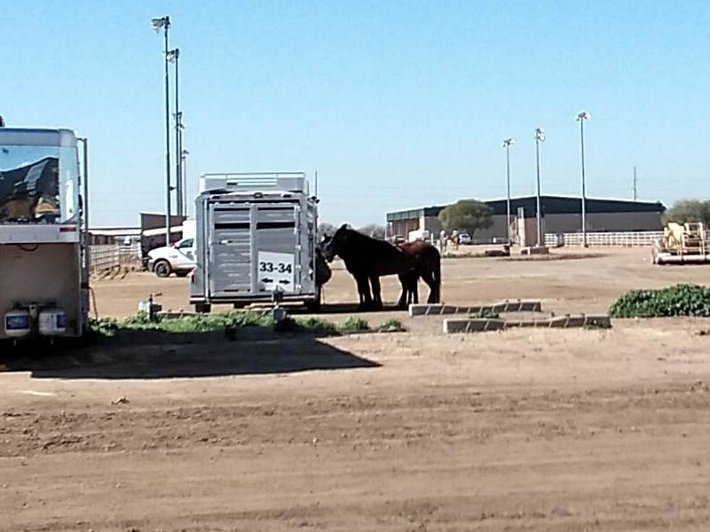
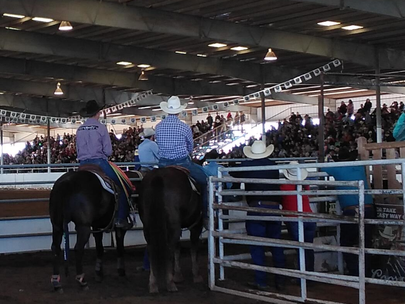

Buckeye Days 2023 and Rodeo
We had a great time in this friendly townThe reason for the trip was to attend an event called Buckeye Days, which was taking place in a small town 25 miles away. I saw an advertisement for it on Friday morning and was intrigued, as the advertisement mentioned that the show was free. I knew there's no such thing as a free lunch, but I thought it would be a good idea to visit the rural town and support our community.
Stop 1: Luch in Buckeye Valley Museum
Lunch was at the Buckeye Valley Museum, where the local historical society held a Chuck Wagon Cookout. We enjoyed an outdoor cheeseburger and the locals expressed their gratitude for the support of local businesses by the visitors.
Stop 2: Buckeye Equestrian Center
After lunch, we moved on to the rodeo venue. In fact, the performance was not entirely free, as we had to pay for parking and admission to enter the arena. I knew this would be the case, but I didn't expect a free lunch. Nevertheless, it was worth it.
The opening
As soon as we got out of the car, the smell of the ranch filled the air. The rodeo was a unique experience. At the opening, the host said that rodeos were never safe and asked for a moment of silence for past cowboys who had died in accidents. The whole audience removed their hats and stood in silence. Then, a rider came in with an American flag and the whole audience stood up. Once the rider stopped, the national anthem was played and the whole audience removed their hats and stood up to sing the anthem.
The showtime
We saw bull riding, where riders had to stay on the bull for a certain amount of time while the bull tried to throw them off. This event was considered the most dangerous and thrilling of all.
We also saw cattle competitions, where riders competed to see who could stay on the cattle the longest, and used lassos to capture cattle, where riders had only one shot to make it. Once the rope was thrown, the riders often let go to prevent being dragged off their horse.
In addition to cattle competitions, we also saw horse competitions. Riders competed to see who could stay on the horse the longest, and captured cattle on the horses, where riders had only one chance to throw a rope. Once the rope was thrown, the horse would stop and the rider would dismount to tie up the cattle's legs, thus completing the task. This time the one end of rope is tied on the horse, so rider wouldn't be dragged off.
The little one
One of the most impressive events was the special category, which is probably only found in America. About 5-year-old young riders rode sheep and competed to see who could stay on the sheep the longest. The courage of those children was truly amazing. From running sheep to riding them, it was clear that these kids were already well-versed in cowboy culture and the skills necessary to participate in rodeo events.
About rodeo
In conclusion, Rodeo is an important part of American culture, and it is a sport that has been around for over a century. It is often associated with cowboys and the American West, but it is also popular in other parts of the country. The rodeo is a showcase of skills and athleticism in events such as bull riding, barrel racing, and calf roping. The rodeo also has a strong tradition of community involvement, with many events taking place in small towns and rural areas, and providing a way for local businesses to bring in income. Overall, it was a great experience and I am glad I had a chance to attend Buckeye Days 2023 and watch the rodeo.